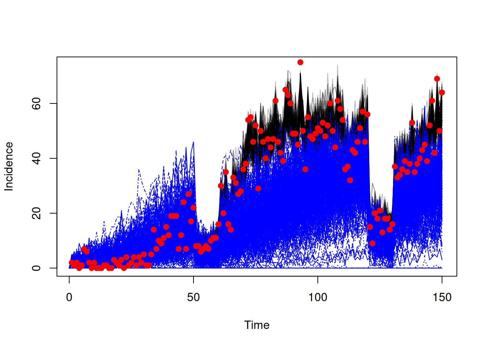
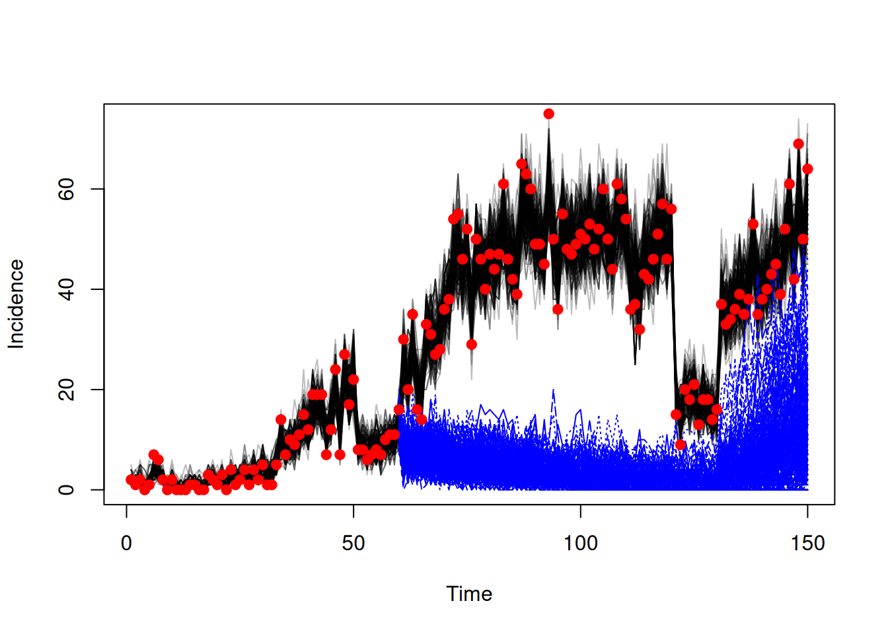

library(odin2)
library(dust2)
library(monty)15 Projections and counterfactuals
15.1 Introduction
We have seen how to fit odin models with monty to produce estimates of fitted parameters and the trajectories of the underlying model. It is common to use such outputs for either of the following:
- Projections - running the model forward from the end of fitted time series to estimate what would happen under given choices of parameters.
- Counterfactuals - estimating what would have happened had parameters been different from those estimated from or assumed in the fits. This could be run from the initial time used in fitting, or from a point in the data time series.
Generally, both of these require that you configure your likelihood object created with dust_likelihood_monty to save additional information about the filtering process, via the save_state or save_snapshots inputs. As with saving fitted trajectories via the save_trajectories input, the outputs can only be extracted after running your sampler if you specified to save them when setting up the likelihood object. It is not possible to extract such information retrospectively so it is important that you set things up correctly.
In the following we’ll illustrate how to correctly setup the likelihood object and then how to use the sampled output from fitting to run both projections and counterfactuals. We begin with some basic setup for an example of an SIS model incorporating school opening and closing, before moving onto the specific implementation for projections and then counterfactuals.
sis <- odin({
update(S) <- S - n_SI + n_IS
update(I) <- I + n_SI - n_IS
update(incidence) <- incidence + n_SI
initial(S) <- N - I0
initial(I) <- I0
initial(incidence, zero_every = 1) <- 0
schools <- interpolate(schools_time, schools_open, "constant")
schools_time <- parameter()
schools_open <- parameter()
dim(schools_time, schools_open) <- parameter(rank = 1)
beta <- ((1 - schools) * (1 - schools_modifier) + schools) * beta0
p_SI <- 1 - exp(-beta * I / N * dt)
p_IS <- 1 - exp(-gamma * dt)
n_SI <- Binomial(S, p_SI)
n_IS <- Binomial(I, p_IS)
N <- parameter(1000)
I0 <- parameter(10)
beta0 <- parameter()
gamma <- parameter()
schools_modifier <- parameter()
cases <- data()
cases ~ Poisson(incidence)
})We will fit this model to some case data.
data <- read.csv("data/schools.csv")
plot(data, pch = 19, col = "red")We’ll assume we know the times of schools opening and closing
schools_time <- c(0, 50, 60, 120, 130, 170, 180)
schools_open <- c(1, 0, 1, 0, 1, 0, 1)and we will fit the parameters beta0, gamma and schools_modifier
packer <- monty_packer(c("beta0", "gamma", "schools_modifier"),
fixed = list(schools_time = schools_time,
schools_open = schools_open))
prior <- monty_dsl({
beta0 ~ Exponential(mean = 0.3)
gamma ~ Exponential(mean = 0.1)
schools_modifier ~ Uniform(0, 1)
})We will create our filter object, starting at time = 0 with dt = 0.25, and setup our sampler
time_start <- 0
dt <- 0.25
filter <- dust_filter_create(sis, time_start = time_start, dt = dt,
data = data, n_particles = 200)
vcv <- diag(c(2e-4, 2e-4, 4e-4))
sampler <- monty_sampler_random_walk(vcv)15.2 Projections
We want to run projections from the state of the model at the end of the time series. This is not saved by default so in order to do this we need to specify save_state = TRUE when setting up our dust likelihood object. After obtaining our samples we will thin them, resulting in a sample size of 200 in this case.
likelihood <- dust_likelihood_monty(filter, packer, save_trajectories = TRUE,
save_state = TRUE)
posterior <- likelihood + prior
samples <- monty_sample(posterior, sampler, 500, initial = c(0.3, 0.1, 0.5),
n_chains = 4)
samples <- monty_samples_thin(samples, burnin = 100, thinning_factor = 8)
traj_fit <- dust_unpack_state(filter, samples$observations$trajectories)The saved state can be found in samples$observations. First we will flatten out the chains dimension of this and the fitted parameters, and unpack each vector of fitted parameters to produce a list (of length equal to the sample size) of list of parameters required by our odin model.
state <- array(samples$observations$state, c(3, 200))
pars <- array(samples$pars, c(3, 200))
pars <- lapply(seq_len(200), function(i) packer$unpack(pars[, i]))We create a dust system using our compiled odin model and these parameters, to start at time = 150 (the final timepoint in the data time series). We set n_particles = 1 to run once per parameter set.
sys <- dust_system_create(sis, pars, time = 150, n_particles = 1,
n_groups = length(pars), dt = dt)We then set the state of the system with the end state from fitting and simulate
dust_system_set_state(sys, state)
t <- seq(150, 200)
res <- dust_system_simulate(sys, t)
traj_projection <- dust_unpack_state(sys, res)We can then plot our projections
incidence_fit <- array(traj_fit$incidence, c(150, 200))
matplot(data$time, incidence_fit, type = "l", col = "#00000044", lty = 1,
xlab = "Time", ylab = "Incidence", xlim = c(0, 200))
matlines(t, t(traj_projection$incidence), col = "blue")
points(data, pch = 19, col = "red")
15.3 Counterfactuals
Counterfactuals are used to examine what would have happened if certain parameters (fitted or fixed) had been different. Broadly there are two types of counterfactuals
- Counterfactuals run from the beginning of the model - when a change of parameters would result in the counterfactual diverging from the fitted trajectories from the very beginning
- Counterfactuals run from a timepoint in the data timeseries - when a change of parameters would result in the counterfactual diverging from the fitted trajectories only from that given timepoint onwards, and everything before that should be the same as the fitted trajectories.
15.3.1 Running counterfactuals from the beginning
Suppose we want to examine what would happen if the infection rate was reduced by 20%. This would affect the model from the beginning - we can just run a simulation from the start time. There is nothing that we are required to save while fitting in order to do this (although we will save trajectories from fitting to compare those to the counterfactual trajectories).
likelihood <- dust_likelihood_monty(filter, packer, save_trajectories = TRUE)
posterior <- likelihood + prior
samples <- monty_sample(posterior, sampler, 500, initial = c(0.3, 0.1, 0.5),
n_chains = 4)
samples <- monty_samples_thin(samples, burnin = 100, thinning_factor = 8)
traj_fit <- dust_unpack_state(filter, samples$observations$trajectories)We will unpack the fitted parameters into a list (of length equal to the sample size) of lists of parameters
pars <- array(samples$pars, c(3, 200))
pars <- lapply(seq_len(200), function(i) packer$unpack(pars[, i]))We will then use a function to multiply beta0 by 0.8 in each parameter list.
f <- function(p) {
p$beta0 <- 0.8 * p$beta0
p
}
pars <- lapply(pars, f)We create a dust system setting the time to the start time used in the fitting. We set the state to the initial state as defined in the odin code, and simulate.
sys <- dust_system_create(sis, pars, n_particles = 1, n_groups = length(pars),
time = time_start, dt = dt)
dust_system_set_state_initial(sys)
t <- seq(0, 150)
res <- dust_system_simulate(sys, t)
traj_counterfactual <- dust_unpack_state(sys, res)We can then plot the results to compare the fitted trajectories to the counterfactual ones.
incidence_fit <- array(traj_fit$incidence, c(150, 200))
matplot(data$time, incidence_fit, type = "l", col = "#00000044", lty = 1,
xlab = "Time", ylab = "Incidence")
matlines(t, t(traj_counterfactual$incidence), col = "blue")
points(data, pch = 19, col = "red")
Note that the trajectories from fitting are produced by filtering to the data, whereas the counterfactual trajectories are produced from unfiltered simulation. This is why we see much more variance in the counterfactual trajectories.
15.3.2 Running counterfactuals from a timepoint in the data time series
Suppose now we want to examine what would have happened if schools had not opened at time = 60 (as they had in our fitting) and had instead stayed closed until time = 130. This counterfactual would diverge from the fitted trajectories at time = 60. To implement this counterfactual we need to save a “snapshot” of the state at time = 60.
likelihood <- dust_likelihood_monty(filter, packer, save_trajectories = TRUE,
save_snapshots = 60)
posterior <- likelihood + prior
samples <- monty_sample(posterior, sampler, 500, initial = c(0.3, 0.1, 0.5),
n_chains = 4)
samples <- monty_samples_thin(samples, burnin = 100, thinning_factor = 8)
traj_fit <- dust_unpack_state(filter, samples$observations$trajectories)We will unpack the fitted parameters into a list (of length equal to the sample size) of lists of parameters
pars <- array(samples$pars, c(3, 200))
pars <- lapply(seq_len(200), function(i) packer$unpack(pars[, i]))and use a function to change schools_time and schools_open within each list of parameters
f <- function(p) {
p$schools_time <- c(0, 50, 130, 170, 180)
p$schools_open <- c(1, 0, 1, 0, 1)
p
}
pars <- lapply(pars, f)We create a dust system setting the time to the start time of our counterfactual, set the state of the system using our snapshot (reshaping to remove the chains dimension first) and simulate.
sys <- dust_system_create(sis, pars, n_particles = 1, n_groups = length(pars),
time = 60, dt = dt)
snapshot <- array(samples$observations$snapshots, c(3, 200))
dust_system_set_state(sys, snapshot)
t <- seq(60, 150)
res <- dust_system_simulate(sys, t)
traj_counterfactual <- dust_unpack_state(sys, res)We can then plot the results to compare the fitted trajectories to the counterfactual ones.
incidence_fit <- array(traj_fit$incidence, c(150, 200))
matplot(data$time, incidence_fit, type = "l", col = "#00000044", lty = 1,
xlab = "Time", ylab = "Incidence")
matlines(t, t(traj_counterfactual$incidence), col = "blue")
points(data, pch = 19, col = "red")